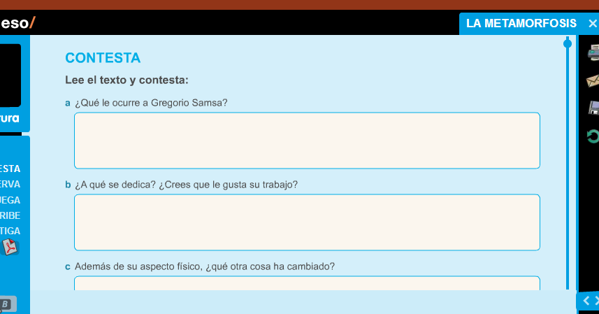

El solucionador està format per un bookmarklet, és a dir, un botó que es col·loca a la barra de preferits i que al clicar-lo fa una funció. Aquesta funció, en aquest cas, mostra els controls de profesor a les activitats de la Galera i per tant el simbol de Solucions.
Instalació
Per Instalar-ho, és ben senzill. Només has d'arrastrar el botó que hi ha més avall a la teva barra de preferits.
Primer, afegeix aquesta pàgina a favorits (Clican't a la estrella)

A continuació veuràs l'enllaç a la teva barra de favorits:

Cliques amb el botó dret a l'enllaç i li dius a "Editar". Et surtira una finestra com aquesta:
Ara només has de canviar el camp URL amb el següent i clicar a guardar:
Instruccions
Les instruccions per fer-ho servir són igual de senzilles que per instalar. L'unic que has de fer és dirigirte a qualsevol activitat de qualsevol llibre de La Galera.

Un cop allà cliques un cop al botó de solucions i uns quants cops sobre la activitat fins que et torni a sortir el simbol de carregar-se...
I ja tenim la S de Solucions!

Cliquem i... Ja Tenim les Solucions! Això funciona amb qualsevol activitat de qualsevol llibre digital de La Galera Text.

Sobre...
Aquest Script ha estat desenvolupat per Hulehule20. Estic treballant en més i de més tipus, així que estigueu atents! Per qualsevol consulta envieu un correu electrònic a hulehule20@gmail.com
Pels més interessats entreu a la pàgina de GitHub i col·laboreu!
Entera't de tot!
Registra't aquí i per rebre correus electrònics amb informació sobre tot allò que vaig desenvolupant relacionat amb les xarxes del institut i els llibres digitals.